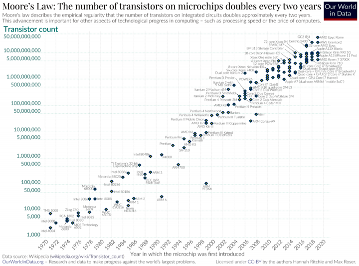
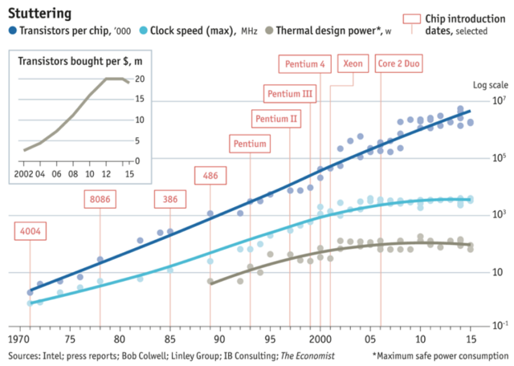
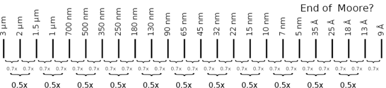
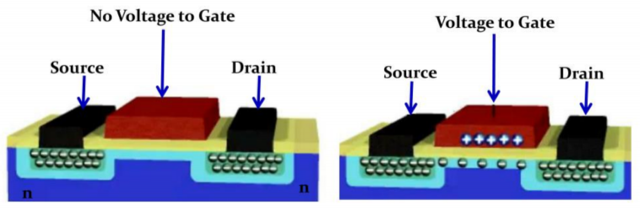
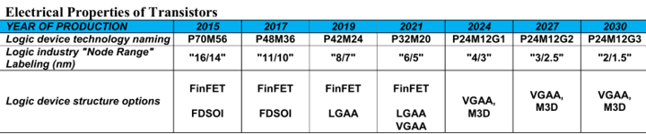
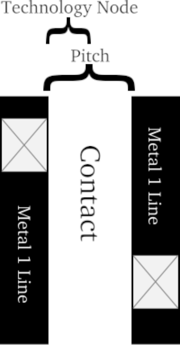
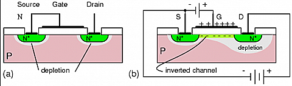
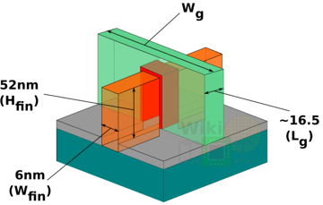
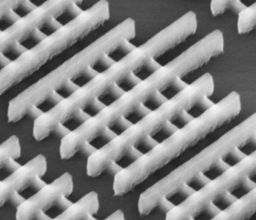

Гонку за мегагерцами, памятную всем, кто интересовался вычислительной техникой в начале 2000-х, сегодня сменила гонка за нанометрами, когда «меньше» непременно значит «лучше». Страсти бурлят, ставки всё выше — но за состязательной суетой, увы, теряется сам смысл понятия технологической нормы.
Совсем недавно Samsung Electronics триумфально объявила о начале серийного выпуска микросхем с использованием производственных норм 3 нанометра. Тайваньская TSMC, чья доля в мировых поставках полупроводников значительно больше, доводит до ума собственное 3-нм производство и вскоре также готова будет отгружать клиентам (в числе которых, кстати, Apple и Intel) первые литографированные по этому техпроцессу кремниевые пластины. В перспективе считаных лет миру обещаны и переход на 2-нм технологические нормы, и дальнейшая их миниатюризация — уже до единиц ангстремов (10 Å = 1 нм). Звучит действительно воодушевляюще, но как-то… нефизично, что ли?
Полупроводниковые структуры в современных чипах — микроскопические,
но единицами нанометров всё же не измеряются
Техника на грани фантастики
Вот если бы очередной техпроцесс именовался в соответствии с характерной величиной минимального по габаритам полупроводникового элемента, который удаётся при помощи данной технологии создать, всё было бы просто и очевидно: «22 нм» — значит, размер получаемого по этой производственной норме мельчайшего транзистора на микросхеме равен 22 нм, «3 нм» — значит, 3 нм. Просто, складно, легко запомнить.
Увы, уже школьный курс физики даёт основания усомниться в наличии у единиц и тем более десятых долей нанометров — как обозначений технологических норм — прямого и явного физического смысла. Дело в том, что микропроцессоры сегодня массово изготавливают с применением фотолитографии: грубо говоря, засвечивают через маску-шаблон (и систему уменьшающих линз) кремниевую пластину со светочувствительным слоем на ней. А это, в свою очередь, значит, что минимально достижимый размер одиночного элемента на готовой микросхеме определяется законами оптики.

Оптически разрешёнными (resolved) в микроскопии
считаются два точечных светящихся объекта,
радиальное расстояние (radial distance) между
пиками интенсивности излучения (intensity) которых
достаточно велико, чтобы уверенно их различать
Эти самые законы оптики прямо постулируют невозможность разрешить, то есть уверенно различить через микроскоп, детали с характерным размером меньше, чем примерно половина (точнее, чем безразмерный коэффициент в диапазоне от 0,50 до 0,61) длины волны используемого для подсветки излучения. Скажем, одни из лучших в мире оптических микроскопов Nikon при использовании света с длиной волны 650 нм обеспечивают разрешение 340 нм, а для излучения на 360 нм минимальный размер уверенно различимых деталей не может быть меньше 190 нм.

Минимальный размер одиночного точечного источника света конечен
вследствие дифракции и зависит как от длины волны излучения (λ),
так и от числовой апертуры оптического прибора (NA). Для двух таких
расположенных рядом источников применяют критерий Рэлея:
расстояние между центрами уверенно разрешаемых источников света
должно быть не меньше чем 0,61*(λ/NA)
В массово применяемых сегодня чипмейкерами техпроцессах — от 22 до 7 нм — задействованы DUV-лазеры (глубокого ультрафиолетового диапазона — deep ultraviolet) с длиной волны 193 нм. Значит, транзисторы, получаемые при помощи этих лазеров и сложной оптики на поверхности кремниевой пластины, должны иметь характерный размер около 100 нм. Если же брать наиболее передовое на сегодня чипмейкерское оборудование, работающее в предельном ультрафиолетовом диапазоне (EUV — extreme ultraviolet) и ориентированное на техпроцессы под названиями «5 нм», «4 нм» и «3 нм», то оно литографирует полупроводниковые структуры, используя излучение с длиной волны 13,5 нм, — то есть законы оптики диктуют предельное разрешение для него на уровне 7-8 нм.
Возникает парадоксальная ситуация, как если бы тупой увесистый колун служил главным инструментом для выполнения тончайшей резьбы по слоновой кости. Что-то тут явно не сходится: трудно допустить, что обозначение «х нм» напрямую соответствует наименьшему размеру какого-то физического элемента полупроводниковой микросхемы.

В транзисторах «14-нм» чипа Intel Broadwell нет ни единого
элемента с характерным размером 14 нм:
ширина гребней (fin width) — 8 нм,
расстояние между гребнями (fin pitch) — 42 нм,
высота гребней (fin height) — те же 42 нм,
расстояние между затворами соседних транзисторов (gate pitch) — 70 нм,
расстояние между соединительными шинами (interconnect pitch) — 52 нм,
высота транзисторной ячейки (cell height) — 399 нм
Справедливости ради отметим, что Intel ещё в прошлом году отказалась от использования термина «нанометр» для обозначения своих техпроцессов, поменяв «10 нм» на «Intel 7», «7 нм» на «Intel 4» и так далее. Да и TSMC всё чаще говорит о грядущих 3-нм производственных нормах как о «процессе N3», также избегая упоминать единицы измерения. И всё же это не отменяет путаницы с нанометрами — скорее даже размывает и без того нечёткие границы между различными технологическими нормами.
Углерод и нанометры
Сомнительность прямолинейного толкования маркетинговых терминов вроде «3 нм» наглядно иллюстрирует следующий пример. В середине 2022 г. команда исследователей из Международного центра наноархитектоники материалов (WPI-MANA) сообщила о создании первого в мире транзистора с физическим характерным размером (длиной канала, по которому пропускается ток при открытом затворе) 2,8 нм. Притом объявление это прозвучало почти на месяц позже, чем Samsung Electronics заявила о начале серийного выпуска чипов по 3-нм технологическим нормам.

Художественное изображение транзистора
из углеродной нанотрубки с 2-нм каналом
Спрашивается, в чём же суть новаторства некой инженерной лаборатории, если примерно того же класса миниатюрности техпроцесс вроде бы уже реализован на крупном предприятии? В том-то и дело, что нанометры исследователей из WPI-MANA — не маркетинговые, а самые настоящие. Правда, достигнут этот уровень миниатюризации фактически вручную, с применением так называемых металлических углеродных нанотрубок и просвечивающего электронного микроскопа (ПЭМ).
Металлическими эти решётчатые структуры из атомов углерода называются потому, что проводят электрический ток при низких температурах, как и обычные металлы. Полупроводниковые же углеродные нанотрубки, напротив, при охлаждении теряют проводящие свойства. Как именно будет вести себя нанотрубка, определяет геометрия её стенок: пока это прямой ровный цилиндр, структура из атомов углерода ведёт себя как металл (в смысле электропроводности), а если трубку изогнуть, скрутить или сжать — уже как полупроводник.

ПЭМ FEI Tecnai TF20 X-Twin в лаборатории
Теперь понятно, зачем инженерам из WPI-MANA понадобился ПЭМ: принцип его действия — пропускание сквозь тонкий образец пучка электронов с последующей его фокусировкой и регистрацией. При этом высокоэнергетичный пучок, разумеется, может непосредственно воздействовать на облучаемые структуры: в частности, деформировать стенки нанотрубок — имеющие, напомним, толщину ровно в один атом углерода. В результате часть исходно металлической нанотрубки под воздействием ПЭМ становится полупроводниковой.
Дальнейшее — дело техники: чтобы получить полевой транзистор, необходим полупроводник, включённый в электрическую цепь, и управляющий состоянием этого транзистора затвор. Как раз подвергнутый воздействию электронного пучка фрагмент металлической углеродной нанотрубки и становится полупроводниковым каналом — это его характерная длина, 2,8 нм, указана в сообщении WPI-MANA как физический размер полученного транзистора.

Чип Tesla D1 Dojo содержит 50 млрд транзисторов, допускает масштабирование
через шину межсоединений с пропускной способностью до 10 Тбайт/с и потребляет
до 400 Вт — неудивительно, что он настолько сложно устроен
И всё было бы замечательно — вот он, вожделенный подлинно наноразмерный базовый элемент интегральной микросхемы! — но не стоит забывать, что речь идёт о лабораторном эксперименте, а не о разработке новой серийной технологии. Поскольку в типичном современном процессоре число транзисторов может достигать 50 миллиардов (например, столько их в выпущенном в 2021 г. чипе Tesla D1, предназначенном для решения задач машинного обучения), изготавливать их по отдельности с применением ПЭМ — явно не лучший вариант с точки зрения массового производства.
Да, процедуру можно автоматизировать, доверив командование микроскопом некой машине с числовым программным управлением, но принципиально скорости это не прибавит. Актуальные на TSMC, Samsung Electronics, SMIC и иных предприятиях технологии основаны на другом принципе, по сути аналоговом: на фотолитографии. И что в этом случае означает обозначение производственной нормы «22 нм» или «7 нм» — по последней, кстати, и был изготовлен упомянутый процессор Tesla D1 — по-прежнему остаётся вопросом.
Светить сюда
Как уже было сказано, фотолитографический процесс очень похож на классическую аналоговую фотографию — из тех ещё времён, когда фотоснимки получали на стеклянных пластинках. Главный по соотношению цены, доступности и рабочих характеристик полупроводниковый элемент в ИТ-отрасли сегодня — кремний, вот почему основой для фотолитографии становится кремниевая пластина.

Основные этапы контактной полупроводниковой фотолитографии:
подготовка подложки (film) на кремниевом субстрате, нанесение фоторезиста,
экспонирование ультрафиолетом непосредственно через маску, проявление,
травление (etching) и удаление (stripping) резиста
На её поверхность наносят слой светочувствительного материала (фоторезист), затем этот слой экспонируют световым потоком, проходящим через маску (фотошаблон) — прорисовку структуры будущей электронной схемы. Сегодняшние маски значительно крупнее (в масштабе), чем итоговые кремниевые полупроводниковые структуры, — поэтому засветка производится через систему уменьшающих линз.
Громоздкая, сложная и дорогостоящая система линз в современных литографических машинах успешно борется с обратной засветкой и дифракцией и — благодаря неимоверным техническим ухищрениям — позволяет достигать физического разрешения не в половину, а примерно в четверть длины волны используемого излучения. Засвеченные участки покрытия меняют свои физические свойства, и их смывают особыми химикатами. Таким образом формируется первый слой будущей сверхбольшой интегральной схемы (СБИС).

Фотолитограф TWINSCAN NXT 1980Di: схема прохождения света
через сложную систему линз. Маска здесь располагается ниже зеркала,
меняющего направление светового потока на горизонтальное,
а экспонируемая кремниевая пластина размещена внизу
Одной экспозицией дело не ограничивается: чтобы сформировать даже отдельный полевой транзистор, необходим слой диэлектрической подложки, слой с управляющим затвором, собственно полупроводниковый канал, металлические межсоединения… Для каждого слоя — свой цикл нанесения фоторезиста, засветки и смывки; ну и свой фотошаблон, а то и не один. И это только для классических, одноуровневых микросхем, тогда как существенно многослойные СБИС вроде актуальных чипов флеш-памяти 3D NAND могут содержать под 200, а то и больше уровней полнофункциональных транзисторных ячеек.

«10-нм» техпроцесс Intel, теперь называемый «Intel 7», предусматривает
формирование на подложке 11 металлических слоёв (от М0 до М10).
Межсоединения транзисторов через эти слои образуют
функциональные элементы (например, схему «И-НЕ»), а из тех, в свою очередь,
формируются более крупные структуры (например, арифметический сумматор).
Ещё два металлических слоя, ТМ0 и ТМ1 (последний на фото не показан)
обеспечивают выход на процессорные контакты
и коммуникации ЦП с системной логикой
Здесь стоит на время отвлечься от поиска физического смысла в маркетинговых обозначениях нанометров для технологических процессов и задаться не менее важным вопросом: почему на протяжении десятков лет чипмейкеры вкладывают десятки и сотни миллиардов долларов в непрерывную миниатюризацию технологических норм? Ведь сам по себе переход от одного техпроцесса к другому вовсе не гарантирует немедленного прироста абсолютной производительности ЦП.
В то же время поступательное сокращение технологических норм — удовольствие недешёвое. Один современный EUV-фотолитограф голландской компании ASML обходился заказчикам в начале 2022 года примерно в 200 млн долларов США (сегодня, надо полагать, ещё дороже). Чего ради городить столь недешёвый огород?
Учение Мура всесильно, но есть нюанс
Всё дело, конечно же, в экономической целесообразности: чем меньше размеры единичного транзистора, тем выше плотность размещения полупроводниковых структур на поверхности будущего чипа. Когда в 1965 г. Гордон Мур, в то время директор по НИОКР в компании Fairchild Semiconductor, формулировал своё знаменитое эмпирическое правило, известное ныне как «закон Мура», он прямо указывал: «Себестоимость полупроводникового элемента с немалой точностью обратно пропорциональна количеству компонентов на СБИС».

Обезоруживающая в своей непосредственности диаграмма
из регулярного доклада ITRS, наглядно демонстрирующая,
как именно самосбывается пророчество Гордона Мура:
новые инвестиции позволяют находить новые способы
миниатюризации процессоров, новые ЦП обеспечивают
прирост в производительности на каждый потраченный
на них доллар, рынок для основанных на этих ЦП устройств
расширяется, что обеспечивает дополнительный
приток инвестиций — и всё повторяется снова
Иными словами, если примерно каждые два года удваивать число транзисторов на серийной микросхеме, себестоимость такого чипа для производителя будет оставаться примерно на прежнем уровне — тогда как продавать его по вполне объективным причинам можно будет значительно дороже. И никакого обмана клиентов: больше транзисторов на СБИС — больше операций в секунду (для ЦП и ГП), выше плотность хранения данных (для флеш-памяти), да ещё и энергоэффективность значительно лучше прежней, поскольку меньшие по габаритам полупроводниковые элементы не нуждаются в высоком напряжении.
Поразительная ситуация: в выигрыше остаются все! Разработчики чипов, изготовители микросхем, поставщики оборудования для этой индустрии, программисты всех мастей, дистрибьюторы и продавцы — а в итоге ещё и конечные пользователи, которым всё это великолепие (включая новое ПО, запускать которое на прежнем «железе» было бы нецелесообразно) достаётся.

Наглядное представление «закона Мура»: по горизонтали — годы,
по вертикали — число транзисторов на кристалле ЦП (логарифмическая шкала),
каждая точка — тот или иной процессор
Каждый новый этап технологического прогресса в микроэлектронике одних обогащает, другим предоставляет ещё более обширные возможности, третьим просто позволяет заниматься любимым делом за достойную плату. Неудивительно, что за последние полвека с лишним цифровизация всего и вся развивалась настолько бурно: чем больше потенциальных сфер применения вычислительной техники, тем шире рынок сбыта микросхем — и тем выгоднее всем причастным к их разработке, производству, продаже и применению, чтобы закон Мура продолжал соблюдаться.
Фактически сложились все предпосылки для превращения подмеченной Гордоном Муром эмпирической закономерности в самосбывающееся пророчество: в середине 1960-х раз в год, а примерно через десять лет уже раз в два года число транзисторов на наиболее передовых на данный момент микросхемах непременно должно было удваиваться. Это оказалось настолько экономически оправданно, что под «закон Мура» верстались планы расширения полупроводниковых производств и оборудования для них, планировались сроки выпуска новых чипов и устанавливались целевые показатели для отделов продаж.

Ещё один взгляд на «закон Мура»: особенно хорошо видно, как на фоне
по-прежнему довольно уверенно растущего числа транзисторов с середины
первого десятилетия 2000-х выходят на плато и рабочая тактовая частота,
и потребляемая мощность ЦП, а количество приобретаемых
на доллар транзисторов (график на врезке) и вовсе начало падать с 2014 года
Увы, начиная со сравнительно недавних пор в свои права начала вступать физика: габариты отдельных транзисторов слишком опасно приблизились к пределу, отделяющему привычный нам макромир от области действия квантовых эффектов, которая подчиняется совсем иным законам. Примерно в 2012 году перестал расти важнейший для всей ИТ-отрасли экономический показатель — количество транзисторов (в составе актуального на данный момент чипа), которые можно приобрести на один доллар, а ещё в начале 2000-х фактически на плато вышли предельно достижимые тактовые частоты процессоров и их теплопакеты под регулярной нагрузкой.
Физическим смыслом
Тем не менее «закон Мура» в формулировке 1975 года более или менее продолжал выполняться по меньшей мере до 2019-го (когда о его скорой деактуализации заявил, в частности, глава NVIDIA). Если принять размер передового в каждом поколении ЦП за постоянную величину, то удвоение числа транзисторов на этом чипе — допустим, их там равное количество по горизонтали и по вертикали — будет соответствовать уменьшению характерных размеров каждого из них примерно в 0,7 раза (обратная величина к квадратному корню из двух).

Самосбывающееся пророчество в действии: неумолимая поступь «закона Мура»
подчиняется правилу 0,7 — по крайней мере должна подчиняться, чтобы снова и снова
обеспечивать возобновление инвестиционного цикла
Собственно, вот почему числовой ряд наименований технологических норм имеет в последние десятилетия именно такой вид: 90 нм — 65 нм — 45 нм — 32 нм — 22 нм — 15 нм… Сперва, где-то до конца 1990-х, производственные процессы в микроэлектронике действительно именовались в соответствии с физическими размерами минимального по габаритам полупроводникового элемента, который по этому процессу мог быть изготовлен. А именно — по протяжённости затвора (gate) полевого транзистора.
Интересно, что в 1997 году Intel сознательно пошла на формальное увеличение декларируемого номинала техпроцесса по сравнению с реальными габаритами получаемых с его применением полупроводниковых устройств. Процесс, получивший маркетинговое название «0,25 микрона» или «250 нм», позволял изготавливать транзисторы с длиной затвора 0,20 мкм — практически на 20 % миниатюрнее заявленного. Следующая производственная норма, «180 нм», также давала возможность получать транзисторы с меньшей длиной затвора — 0,13 мкм.

Схема работы полевого транзистора.
Слева: к затвору (gate) не приложено напряжение,
поэтому исток (source) и сток (drain) изолированы; тока нет.
Справа: под воздействием напряжения в полупроводнике
возникает проводящий ток канал от истока к стоку
Делалось это, разумеется, не из скромности, а ради того, чтобы «закон Мура» по-прежнему соблюдался без сучка, без задоринки, без отклонений — даже в сторону перевыполнения, — что лишний раз подчёркивает самосбывающийся характер этого технологического «пророчества». Вот, кстати, почему недавнее переименование формально «10-нм» техпроцесса Intel в «Intel 7», «7-нм» в «Intel 4» и так далее, о котором мы упоминали выше, имеет под собой вполне логичное обоснование: компания просто навёрстывает данную прежде своим соперникам фору, возвращаясь к общепринятым темпам смены производственных норм.
Представительный совет экспертов по СБИС (включавший представителей региональных ассоциаций полупроводниковой индустрии — японской, американской, европейской, тайваньской, южнокорейской и китайской материковой) до 2015 года регулярно обновлял своего рода руководство — точнее, свод рекомендаций — по развитию полупроводниковой технологии, The International Technology Roadmap for Semiconductors (ITRS). В последнем издании этого свода явно указывается на чисто маркетинговый характер наименования технологических норм: в таблице с прогнозами по развитию логических СБИС до 2030 г. есть строка «Маркировка „производственной нормы“ полупроводниковых устройств» — именно так, в кавычках. И в кавычках же приводятся названия как актуальной на тот момент нормы «16/14 нм», так и будущих: «11/10», «8/7» и так далее.

Выдержка из таблицы с прогнозами электрических характеристик
грядущих процессоров, опубликованной в регулярном докладе ITRS за 2015 г.
Изначально в терминах ITRS производственная норма (process node) определялась как наименьший половинный зазор (half-pitch) между контактными металлическими дорожками на самом нижнем уровне изготавливаемого по методу фотолитографии полупроводникового чипа. Физический смысл в таком определении прослеживается: для СБИС в целом важны не сами по себе габариты отдельных её элементов, а возможность уверенно разделять проводники (дорожки) и полупроводники (транзисторы), чтобы те и другие исправно работали должным образом.

Исходный смысл определения масштаба производственной нормы
как половинной ширины зазора между соседними металлическими дорожками
на самом нижнем уровне чипа (перечёркнутые прямоугольники
обозначают контакты, соединяющие данный слой с вышележащими) прост и очевиден
Однако уже начиная с техпроцесса 45 нм, внедрённого в 2007 году, с физическим смыслом пришлось распрощаться. Именно тогда инженеры Intel создали традиционный планарный транзистор с длиной затвора 25 нм — а дальше, как выяснилось, уменьшать этот габарит не представляется возможным. Если не переходить от кремния к другим полупроводникам, конечно, — но это означает коренную перестройку всей микропроцессорной индустрии, на что пока ни решимости, ни денег у крупных игроков определённо нет.
Нужно меньше ангстремов
Оставим пока в стороне вопрос о том, как именно получить на кремниевой пластине 25-нм полупроводниковый элемент, используя 193-нм лазер (это непросто, но физически достижимо), и поясним, почему 25 нм — непреодолимый предел для размера транзисторного затвора.
Всё дело в физике: чтобы полупроводниковый прибор работал как должно, необходимо не допускать электрического пробоя его затвора в закрытом состоянии. По целой совокупности причин для основанного на кремнии (даже с рядом улучшающих его свойства присадок) полупроводника невозможно более, чем это было достигнуто в 45-нм техпроцессе, снижать рабочее напряжение, сокращать длину затвора и наращивать концентрацию примесей, препятствующих самопроизвольному прохождению заряда через канал (пробою).

Квантовые эффекты порождают туннельный ток на границах между
полупроводниковой базой транзистора (имеющей p-проводимость)
с одной стороны и его истоком/стоком (с проводимостью n-типа) — с другой.
В результате длина активного канала (транзистор работает — правая картинка)
становится меньше физического расстояния между границами истока
и стока из-за образования вокруг них зон, обеднённых (depletion)
отрицательными зарядами, поскольку напряжение к затвору прикладывается
положительное. Если расстояние от истока до стока слишком мало,
зоны обеднения смыкаются — происходит пробой базы
Если не вдаваться в электротехнические детали, то у полевых транзисторов, на которых основана вся современная кремниевая микроэлектроника, эффективная длина канала меньше, чем физическое расстояние между истоком и стоком заряда. То есть хотя канал изготовленного на фотолитографе транзистора действительно простирается на честные 25 нм, на деле при активации затвора электроны проходят значительно меньшее расстояние — в основном из-за диффузии примесей, формирующих исток и сток на поверхности кремниевой пластины, в толщу последней.
Иными словами, после фактического достижения длины канала в 25 нм на этапе 45-нм техпроцесса номенклатура техпроцессов по ITRS перестала соответствовать половинной ширине зазора между контактными дорожками — и маркетинговое наименование последующей технологической нормы, начиная с «32 нм», получалось простым умножением предыдущего на 0,7 с округлением.

Главные габариты «7-нм» транзистора TSMC:
высота гребня (Hfin) — 52 нм,
ширина гребня (Wfin),
длина затвора (Lg) — 16,5 нм
На этапе «22 нм» всё стало ещё интереснее: тогда, в 2012-м, Intel впервые применила трёхмерные транзисторы FinFET с каналами-гребнями, или плавниками. Площадь контакта между затвором и каналом при такой конфигурации значительно увеличивается по сравнению с планарной, что позволяет делать транзисторы значительно ỳже — притом что физическая длина затвора продолжает оставаться немногим меньше 20 нм даже для техпроцесса с маркетинговым наименованием «7 нм».
Вот почему после 2012-го название производственной нормы в микроэлектронике, по сути, не имеет уже реальной связи с какими бы то ни было физическими размерами отдельных элементов на поверхности полупроводникового кристалла. Более-менее выдерживается темп внедрения новых техпроцессов — правда, за последние годы он по объективным причинам несколько отстаёт от заявленной в «законе Мура» одной пересменки в два года. Примерно сохраняется и курс на удвоение числа транзисторов в новейших микросхемах, а маркетинговое название очередной новой нормы получается путём безыскусного умножения наименования предыдущей на 0,7.

Структуры FinFET-транзисторов с характерными гребнями
(минимальная длина канала — там, где гребни пересекаются
с затворами, — составляет, согласно официальной спецификации, 25 нм)
на поверхности «22-нм» кристалла Intel Sandy Bridge
«Раньше это было обозначение технологического этапа, это имело какой-то смысл, имело отношение к чему-то реально существующему на поверхности пластины. Сегодня числа — это просто числа. Как, знаете, марки автомобилей: есть BMW пятой серии или Mazda 6 — какой смысл в этих пятёрке и шестёрке? Неважно, чему соответствует название производственной нормы сейчас, это просто очередная веха в развитии технологий, её наименование, если хотите. Так что давайте не будем сами себя вводить в заблуждение и пытаться напрямую сопоставлять названия техпроцессов с теми физическими характеристиками полупроводниковых приборов, которые они позволяют получать».
Такой совет ещё в 2019 г. Филип Вонг (Philip Wong), вице-президент TSMC по корпоративным исследованиям, давал собравшимся на 31-ю конференцию Hot Chips, одну из наиболее представительных площадок для дискуссий между представителями мировой микропроцессорной индустрии. Тогда тайваньская компания как раз представляла свои перспективные техпроцессы N7, N5, N3.
Теперь IBM уже создала первый в мире полупроводниковый чип по производственной норме «2 нм» (правда, не сильно отличающейся по плотности транзисторов от процесса TSMC N3 — 333 млн единиц на квадратный дюйм у первой против 292 млн у последнего). Intel запланировала запуск собственного техпроцесса 20А («А» указывает на маркетинговую длину в ангстремах) на 2024 г. TSMC вовсю работает над производственными нормами не только N2, но и N1.
Так что, даже с учётом нынешней крайне непростой ситуации с поставками литографических машин и иного оборудования для производства чипов, вряд ли стоит сомневаться, что «закон Мура», пусть и в несколько скорректированном виде, ещё надолго останется путеводной звездой для всей микропроцессорной индустрии. Пусть даже физического смысла маркирующие его дальнейшее развитие вехи более не имеют.